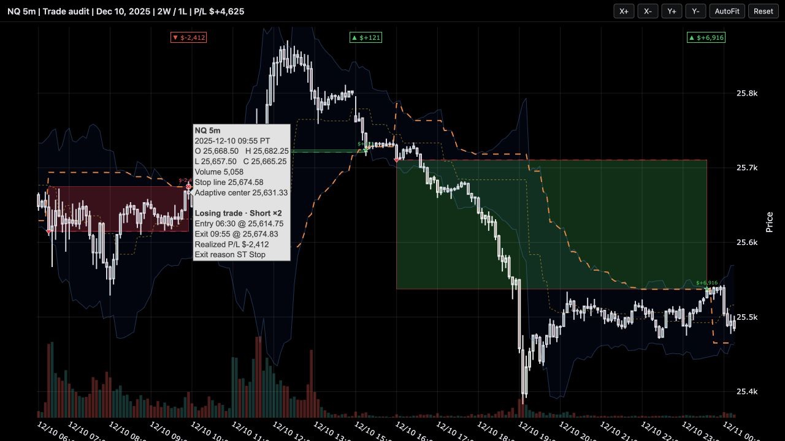
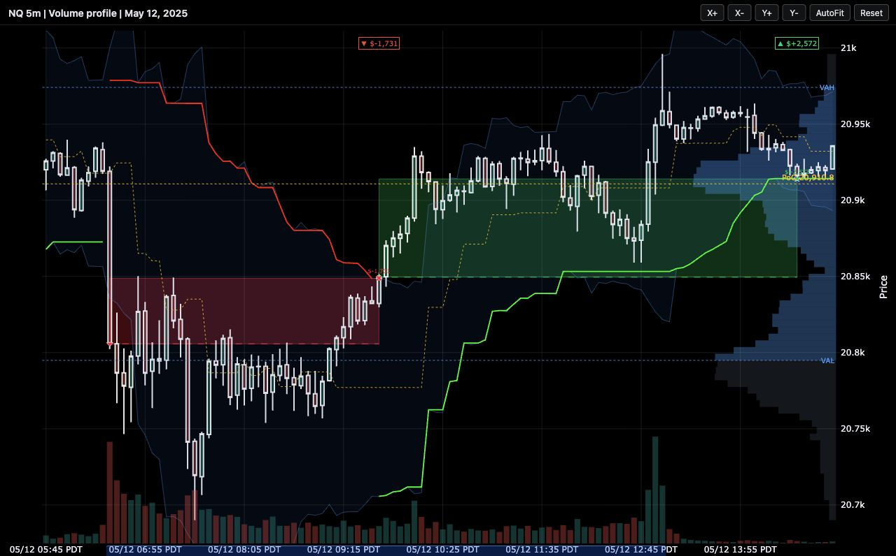
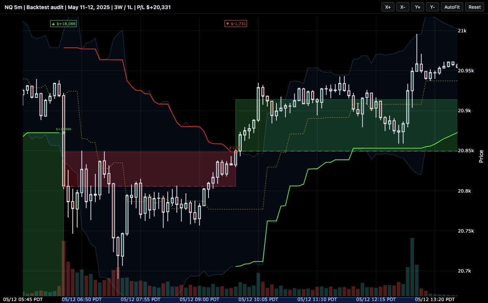

A backtest summary tells me whether a strategy made money. It doesn't tell me whether a stop moved at the right time, whether an entry landed on the intended bar, or whether a filter behaved sensibly during a trend. Those are different questions, and the second kind is where bugs hide.
For a while my routine was to export a run, open TradingView, and hunt down each timestamp by hand. It was slow enough that inspection usually happened late, once something already looked wrong, and that order is backwards. I built backtest-charts to make inspection cheap enough to do first: bars, saved fills, and indicator values on one interactive chart.
What it does
- Draws candlesticks, volume, trade boxes, entry and exit markers, and realized P/L.
- Adds indicator lines, bands, levels, background regimes, event markers, and an optional equity curve.
- Shows candle, indicator, and trade details on hover.
- Marks regular market hours on the time axis and removes dead session gaps.
- Uses the navigation you'd expect from a paid charting platform: scroll to zoom horizontally, drag to pan, and drag the price scale to change the vertical range.
- Exports a standalone HTML file that can be opened locally or shared with a research report.
The last two items are deliberate design decisions, not just features. A single self-contained file means a chart can sit next to a research note and still open in five years. The navigation is rebuilt because a default web chart handles nothing like a trading platform, and reviewing hundreds of trades is only bearable when the chart gets out of the way.
A closer look
These examples use real NQ 5-minute bars and saved backtest fills. The market data and strategy are not included in the public repository.



Why I use it
The clearest example was a chart that showed a consolidation filter switching on and off eighteen times during a single clean downtrend. The bug was mundane: the filter recalculated its range on every bar instead of freezing it while active. No summary metric flagged it, since win rate, profit factor, and drawdown all looked plausible, but on the chart it took seconds to see.
Since then I split the job: statistics tell me how a strategy performed, and the chart tells me whether it behaved.
Basic use
The public package only renders. It doesn't compute indicators or trading signals, so you bring an OHLCV table, a trades table, and whatever overlay series you want to inspect.
import pandas as pd
from backtest_charts import TradeChart
bars = pd.read_csv("bars.csv")
trades = pd.read_csv("trades.csv")
chart = TradeChart(bars, title="Backtest review", symbol="NQ")
chart.add_trades(trades)
chart.add_line(stop_values, "Stop", color="#fb923c", dash="dash")
chart.add_band(upper_band, lower_band, "Volatility band")
chart.render("chart.html", include_plotlyjs="inline")The result is a self-contained HTML file that needs no server or notebook, and whoever you send it to has nothing to install.
Built to be driven by agents
Most charts in my research loop aren't made by me anymore. Coding agents render them, because the API is plain Python calls that an agent can compose: add an indicator line, shade a regime in the background, place custom labels on the exact trades worth attention, and slice the window so the chart opens already zoomed to the two days that matter.
That changes what a chart review looks like. Instead of me scrolling through months of data, an agent hands me a small set of charts it selected and annotated: the biggest winners, the ugliest losses, and the trades that test the rule we're actually studying. The repository ships an agent skill file that teaches a coding agent the API and its pitfalls, so the charts come back consistent no matter which agent built them. I describe how these audit sets fit into the wider research loop in the harness post.
Try it
pip install git+https://github.com/rezwan05/backtest-charts.git
python examples/basic_usage.py && open examples/demo_chart.htmlThe repository includes a synthetic-data example, so the demo can be run without market data. Source and documentation are available at github.com/rezwan05/backtest-charts.